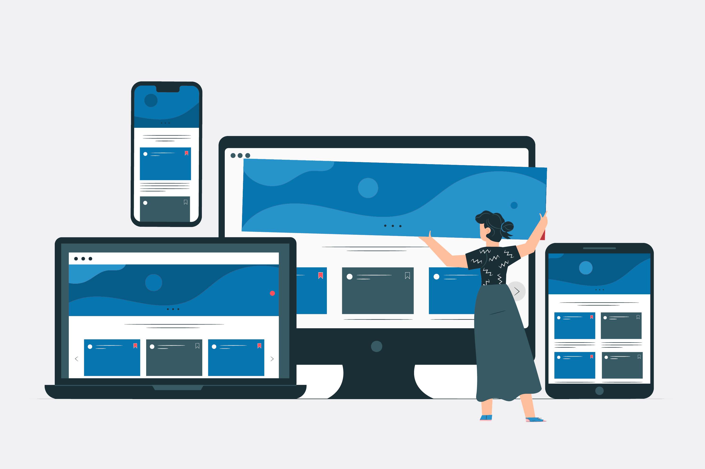

Hello visitor. I'm Marko. Nice to meet you.
Me
I'm a Danish frontend developer, who loves to code and design websites

My skills
I like to design responsive websites, and will now take you through my journey of coding...
ONLY FREEWARE
Learn more about me on the next page. I promise you, it will be exciting!